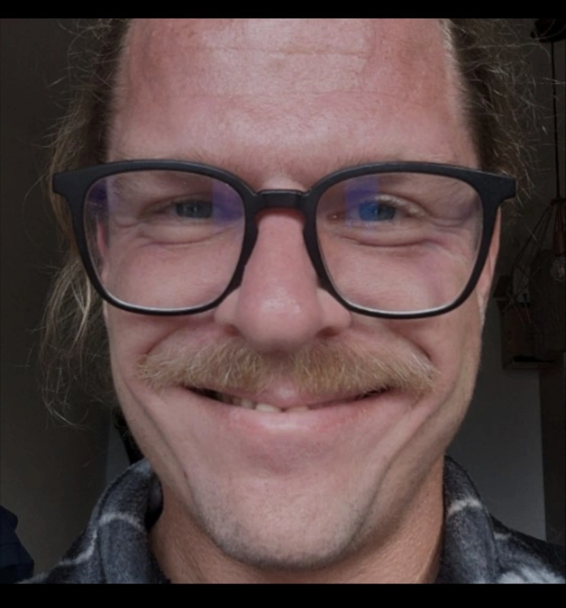

This page is regenerated from Member UDT instances at guild/web/members/udts/instances/.
Each member's canonical source is in guild/web/members/originals/*.md.
Guild Members
8 members in the Guild directory.

Jona Heidsick
